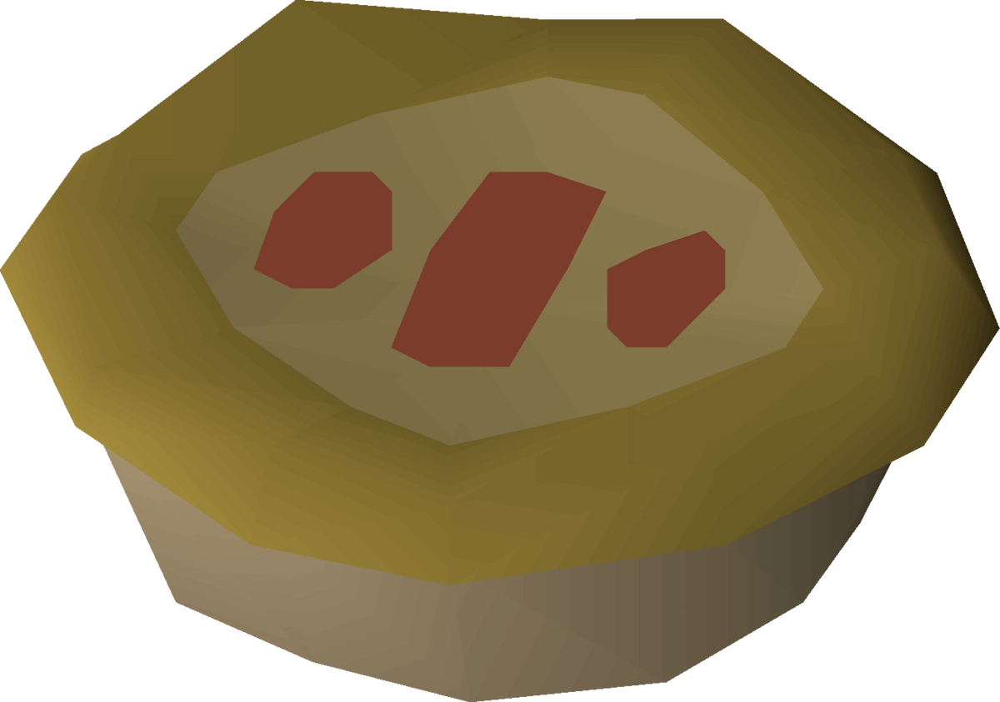
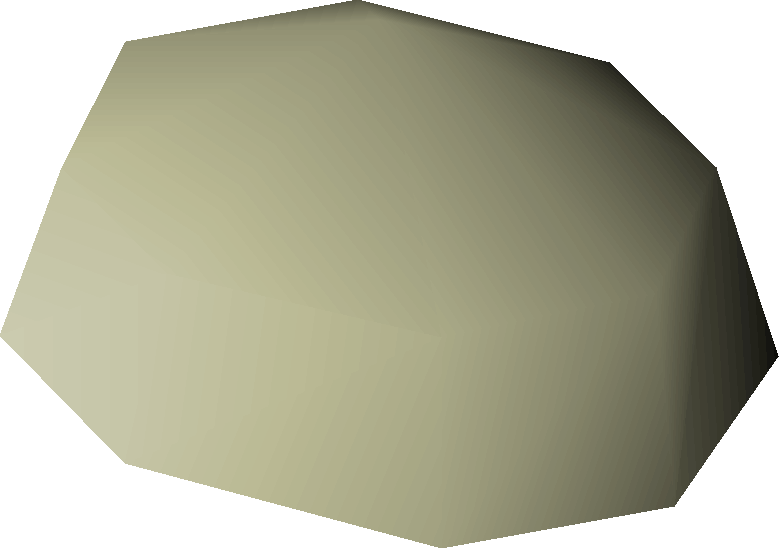
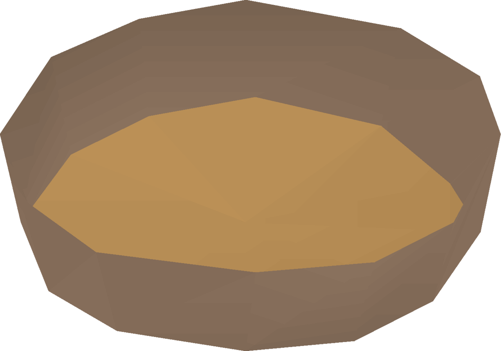
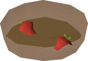
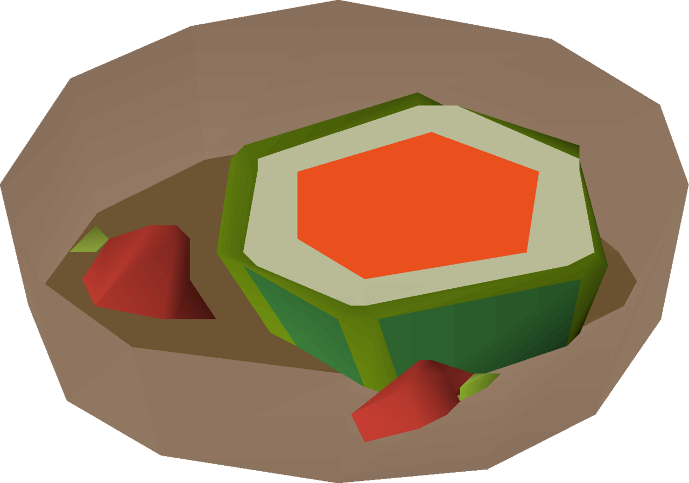
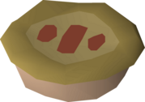

Summer Pie
All the fruits of a very small forest

Oh the summer pie. The best thing since cake. Speaking of cake, have you been practicing your cakes? Well you better have been. You should have made 514585 cakes since last we spoke. Otherwise you'll stand no chance of making this incredibly complicated pie. It's like super complicated too. You have to have all these crazy fruits and you have to like put them in this pie shell. Also, you know the pie shell won't make itself so you have to like do that too! It's really crazy.
Anyways, how have you been? I have really missed seeing you since you started making all of those cakes. In a way, you know, I feel like this is all my fault. I should have never taught you how to make the cake to begin with. But at the same time, I think that might be unfair to you. You know. Im being selfish. You clearly have a gift for cooking and how could I be so selfish as to keep that from you. Or maybe keep you from that. But. I mean. I LOVE YOU. But if anyone should know that the love for cooking can be stronger than any other love it should be me, the head chef. Hmmm. I think thats what makes us the perfect fit. Don't you? I don't know. Maybe it is a little crazy to fall for a HTML project, but I'm happy here. WE are happy here. Also, it's just so colorful!
Ingredients
Directions
- Begin by forming the pastry dough. You will need to combine the pot of flour and the bucket of water. It should form a nice satiny stretchy dough. It's potentially pastry!

- Next we will create the base of our summer pie, the crust. You will need your pie dish for this step. Use the freshly made pastry dough on the pie dish. Voila! You are the brand new owner of a pie shell! Now you just need to find a filling for this pie!

- Now the interesting stuff begins! Use the strawberry you have acquired on the pie shell. This should yield a part summer pie (strawberry). We are getting closer, but it still needs two more ingredients.

- Use the watermelon on the part summer pie (strawberry) to create a new iteration. The part summer pie (watermelon)! We are getting even closer! Still needs one more ingredient.

- The final step of our preperation is to use the cooking apple on the part summer pie (watermelon) to create your raw summer pie! Yes, the pastry dough will magically close itself across the top. Before you get too far ahead of yourself we need to cook it. Fresh fruit may be good for you, but you should really cook this.

- It is time for the moment of truth. You've come all this way so please don't burn the pie. Toss her in the range. Fondle that range nice. Pull out your very own summer pie. If you've managed not to burn it, then well, CONGRATULATIONS!
You just pulled off the hardest cooking feat in all of Gielinor! I've never been more proud. :')
HOME